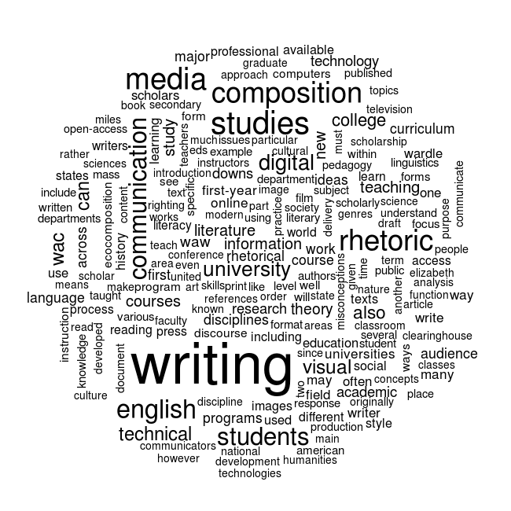
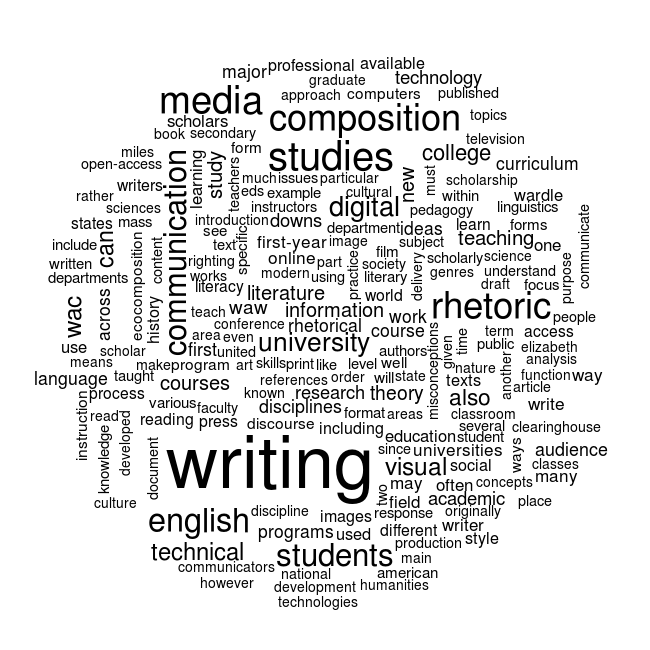

Statistical Reasoning
After the data janitorial work is complete, allowing a more acurate calculation of word frequencies, the next areas to explore with the wordcloud visualization are how the words are laid out in the visualization and how colors are assigned. Certainly, there are no right answers to these questions—which is another reason they are as rhetorical as they are quantitative. But that is precisely the rub—they are both quantitative and rhetorical—which makes them more difficult to determine than the janitorial work. The more ambiguous a visualization, the more it tends toward the rhetorical end of the spectrum, and the more precise the more it tends toward the quantitative end of the spectrum. The mistake, however, is thinking that very precise visualizations are not at all rhetorical. As Darrell Huff and Irving Geis explain in How to Lie with Statistics, “This suggests giving statistical material […] a very sharp second look before accepting any of them. Sometimes a careful squint will sharpen the focus. But arbitrarily rejecting statistical methods makes no sense either. That is like refusing to read because writers sometimes use words to hide facts and relationships rather than to reveal them” (121). However, the spectrum works the same from the opposite perspective as well. Just because wordcloud visualizations are more ambiguous does not mean that statistical reasoning is not relevant.
In the Data Janitorial Work section, the words in the wordclouds were laid out according to their frequencies. The words with the highest frequency were placed in the center, and then the words were arranged in circular fashion outward from center as their frequency lessoned. While this ordering makes sense logically, it actually makes it more difficult to see details and contrast. Whereas it may be counterintuitive, a random word layout allows for a perception of greater detail amount the ranges of word frequency. The two images below show the difference between a logical and random word layout. The first image displays the the center-out frequency layout, and the second image displays the words at random with 10% of the words turned 90 degrees.
 

By changing the logic of how the words are laid out in the wordcloud, it becomes easier to visually analyze and compare frequencies. While the layout is randomized, the size of the word font remains categorized according to frequency. This allows the visualization to display more contrast among the words without making the visual altogether useless. Also, by turning a portion of the words 90 degrees, this also allows for greater contrast and variation in the visual. There is not space in this article to discuss the importance of randomization for statistical reasoning and data analysis, but it is important to note that the change from a frequency ordered layout to a random one is counterintuitive until it is tested. The question to ask, then, is which layout is more appropriate to the dataset and project goals? With a visualization as ambiguous as a wordcloud, there is likely no useful answer to this question, but the comparison of the two layouts exemplifies the problem of proportionality. If the point of the wordcloud was to only display the variation in word frequencies, then the random layout may create the perception of more frequency variation than is actually occurring in the corpus. Such questions stretch the limits of what a wordcloud visual is intended to portray, but they are important because the raise the question of why a particular visualization was chosen in the first place.
While word color selection, like layout, could also be asigned at random, too much randomization would render the visualization meaningless. Therefore, colors can be assigned to levels of frequency in the same way that font size is determined. The visualization below retains the random layout, and colors are assigned from red to blue—with dark red assigned to the most frequent word, light red assigned to less frequeny words, and blue assigned to the least frequent words. The logic of this color designation follows the standard “red is hot” and “blue is cold” color use. However, as the image below displays, the common color hot/cold color assignment may not be the best choice for a wordcloud.
As the image above shows, the light blue and light red colors—meant to display a wider range of frequencies—actually serves to emphasize only the dark red and dark blue colors. However, as the next image shows, if rather than using a range between only two colors, a greater variation of dark colors are used, the differences in frequency variation and contrast are easer to percieve.
Now that colors have been assigned, the word layout can be re-explored. In the image below, the words are once again laid out according to their frequency. When comparing the two images, there are now advantages to both layout approaches. The randomized image above may still have a slight edge with visualing contrast among the variations in frequency, but the new image below is better at displaying which words fit within a similar frequency range. For example, it is much easier to see in the new image below that “composition,” “media,” “studies,” and “rhetoric” are in the same frequency range.
Finally, as mentioned earlier in this section, the question of whether a wordcloud is an appropriate visualization for a particular analysis must be considered. For example, in the random wordcloud above it would be a mistake to draw conclusions based on how close to one another words appear in the wordcloud. There are likely countless statistical approaches for determining the relationships among data. One such visualization for a corpus of text is a cluster analysis that looks at how words cluster across all the documents. In the graph below, the nodes are words and the lines draws between them are determined by how often the two words appear together in each of the documents. If two words appear together more than 25% of the time, then a line is drawn between them. Frequency analysis only allows provides a count of which words appear the most often in the corpus, but a cluster analysis allows for a determination of which less-frequent words are important to the corpus and how they may closely associate with other words.
XXXNeed conclusion for this section–restating and summarizing arguments made throughout the sectionXXX